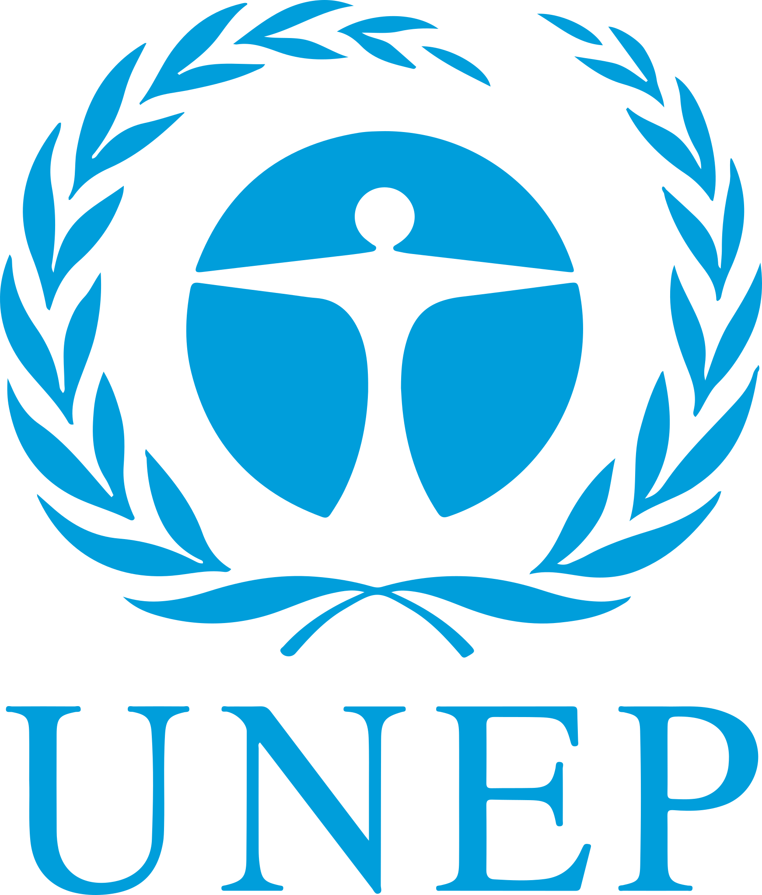
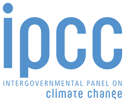
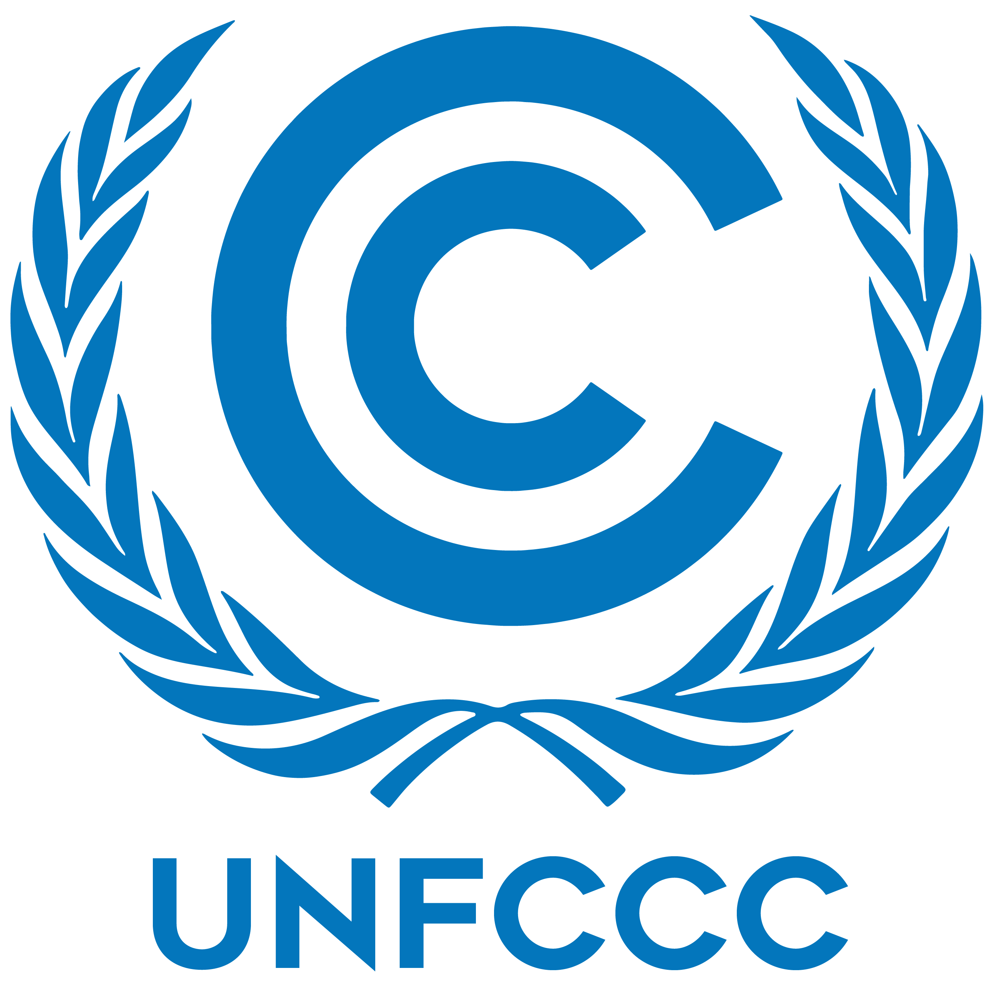

Órgãos Regulamentadores Mundiais
-
 ONU - Organização das Nações Unidas
ONU - Organização das Nações Unidas
-  UNEP - Programa das Nações Unidas para o Meio Ambiente
-  IPCC - Painel Intergovernamental sobre Mudanças Climáticas
-  UNFCCC - Convenção-Quadro das Nações Unidas sobre Mudança do Clima
- OMM - Organização Meteorológica Mundial
Próxima Página: Conscientização Ambiental
Voltar para a Página Anterior
Voltar para a Página Inicial